Ballon tenduAccroupie, face caméra, ballon tenu à bout de bras devant elle.
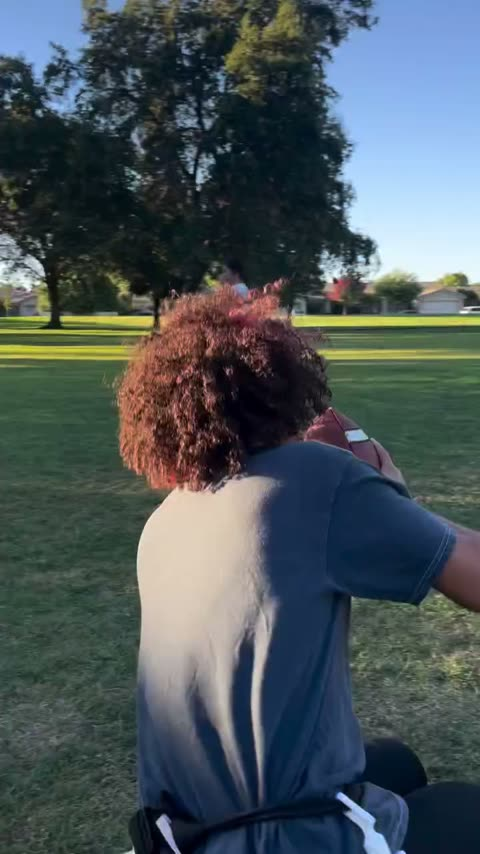
PivotLe même moment vu de dos : le corps tourne, ballon tendu sur le côté.
Vendre la feinte avec le buste ET le ballon.
Rester bas pendant la feinte.
Sortir en course dans l'autre sens, ballon sécurisé.
La caméra tourne autour de la joueuse : impossible de certifier que le pivot vient d'elle.
Ce que la vidéo montre vraiment : un montage de 10 plans d'un échauffement collectif. L'exercice dominant est la fente marchée avec le ballon au-dessus de la tête (séries 3 et 4). La position très basse (série 1) existe, mais avec le ballon devant la poitrine. Les séries 2 et 5, telles que décrites ici, sont notre progression : la vidéo ne montre ni position basse avec rotation, ni sprint avant la descente.
0:15
65 min
Circuit technique
5 min pour expliquer et placer. Ensuite 2 circuits identiques en parallèle : dans chaque circuit, 4 joueurs forment 2 binômes qui échangent de zone après chaque mini-set complet.
2 QB fixes · 2 circuits identiques · 4 joueurs autour de chaque QB
Les deux circuits tournent en même temps — 5 personnes par circuit, ≈ 10 joueurs.
circuit AQB1 fixe5 personnes
↑retour au QB↺
QB1
Poste fixe
Il ne bouge jamais et enchaîne les ballons.
↕
1
Zone QB
2 joueurs
1 receveur + 1 rusher — mini-set de 3 passes
Mini-set complet slant → out → go : on ne change pas de joueur entre les trois, le rusher presse les trois. Au retour suivant dans la zone, receveur et rusher inversent leurs rôles.
↓
2
Zone Flag pull
2 joueurs
1 attaquant + 1 défenseur — reps en continu
Reps en continu jusqu'au signal du QB ; inversion à chaque rep ; viser ≈ 4 reps, soit ≈ 2 dans chaque rôle par joueur. On ne ralentit pas pour atteindre un chiffre.
↓
Appui / cut — sasflag pull terminé → joueur 1 traverse → joueur 2 traverse → retour zone QB. Un par un, pas de file, pas d'attente.
circuit BQB2 fixe5 personnes
↑retour au QB↺
QB2
Poste fixe
Il ne bouge jamais et enchaîne les ballons.
↕
1
Zone QB
2 joueurs
1 receveur + 1 rusher — 3 passes
rôles inversés au retour
↓
2
Zone Flag pull
2 joueurs
1 attaquant + 1 défenseur — reps en continu
↓
Appui / cut — sasun par un
Les zones ne bougent pas — les binômes changent de zone
Binôme 1Zone QB→Zone Flag pull
Binôme 2Zone Flag pull→Zone QB
Puis on recommence : à chaque rotation, chaque binôme repart dans l'autre sens.
Quand on tourne ?
Zone QB — slant + out + go terminés → rotation immédiate
Pendant ce temps, zone Flag pull : enchaîner les reps en continu, ≈ 4 par mini-set, sans jamais attendre. Au signal, on termine la répétition en cours.
→ Les deux binômes échangent de zone. Pas d'attente.
À chaque retour en zone QB, le receveur et le rusher inversent leurs rôles. Le binôme qui sort du flag pull traverse le sas appuis, un joueur après l'autre.
↺Les QB restent fixes. Les deux binômes échangent de zone après chaque mini-set complet.
zone 1FICHE
Zone QB — 3 tracés
Slant → out → go
Objectif : enchaîner les 3 tracés avec le même receveur et garder un ballon attrapable, quel que soit le tracé.
Slantcoupe intérieure
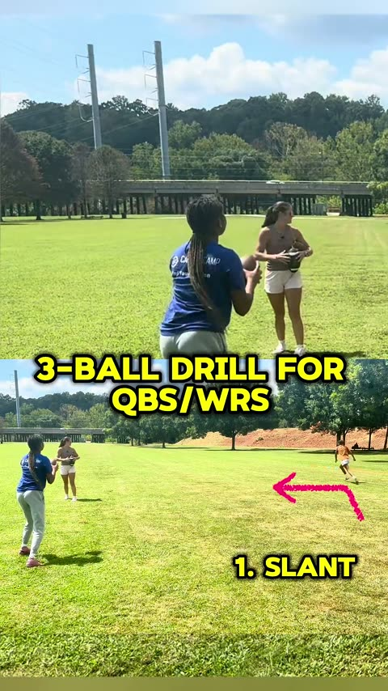
DépartQB et receveur face à face, libellé « 1. SLANT » affiché.
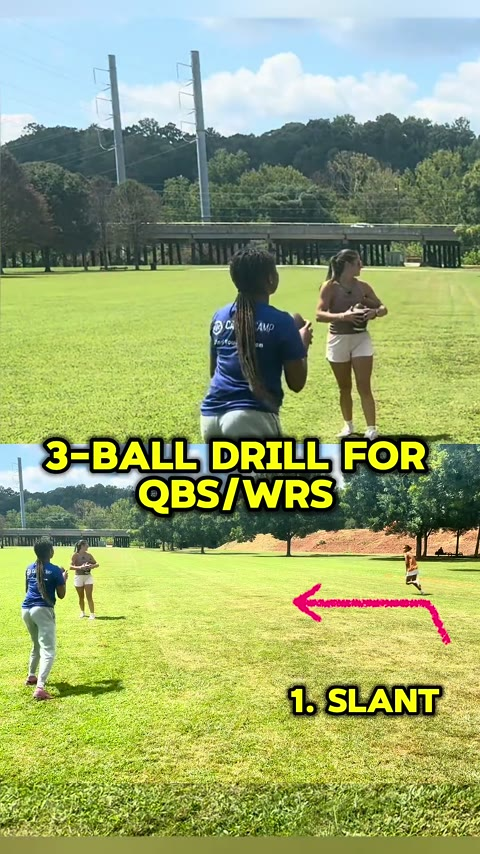
Ballon en volLe ballon quitte la main : il est en l'air au-dessus du terrain.
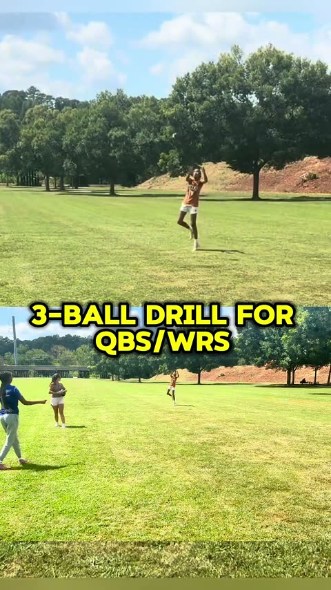
RéceptionLe receveur saute, bras levés, pour attraper en avançant.
Coupe nette vers l'intérieur · fenêtre de passe tôt · ballon devant la poitrine.
Outcassure extérieure
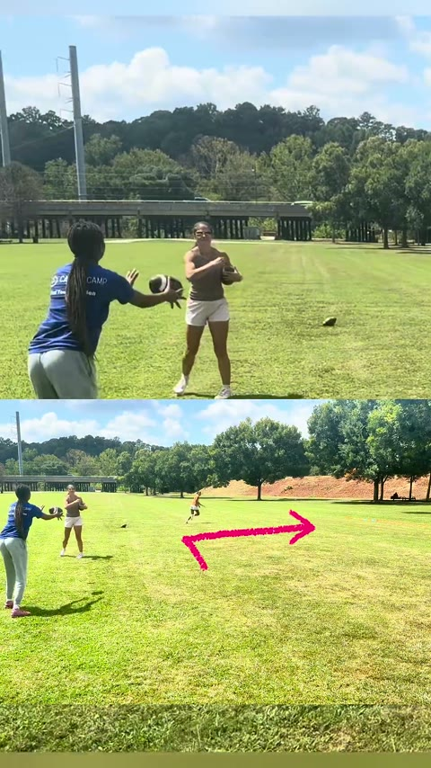
DépartQB et receveur face à face, libellé « 2. OUT » affiché.
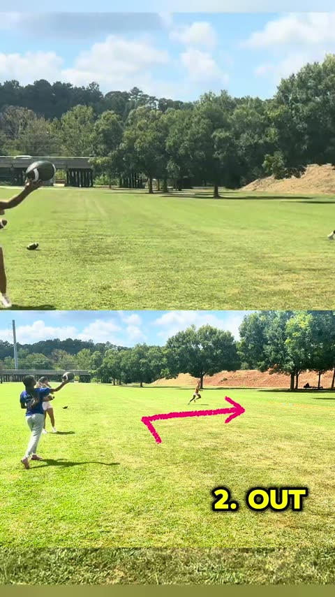
Bras arméLe QB arme au-dessus de l'épaule, ballon en main.
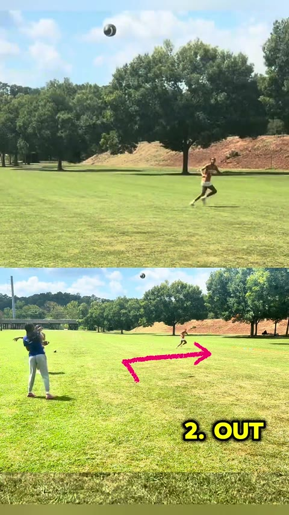
Ballon en volLe ballon part vers la ligne, le receveur court dessous.
Cassure vers l'extérieur · rester bas dans la cassure · ballon vers la ligne.
Gotrajectoire profonde
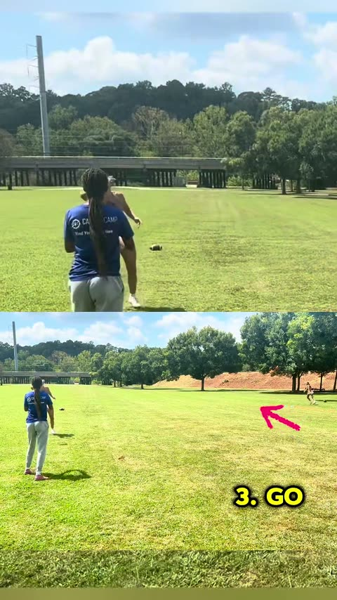
Départ verticalQB et receveur alignés, libellé « 3. GO » et flèche affichés.
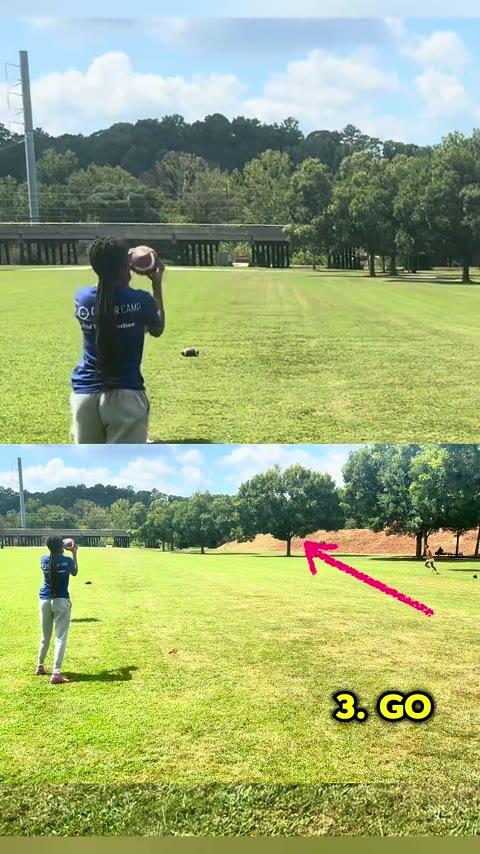
Bras arméLe QB arme haut, ballon à l'épaule, prêt à lancer.
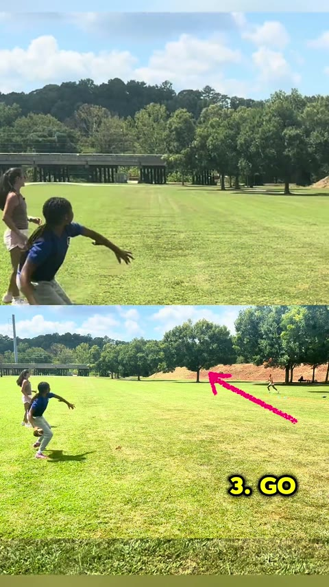
Ballon profondBallon en l'air, trajectoire profonde : le receveur court dessous.
Départ vertical sans flotter · ballon lancé devant, jamais derrière · réception en course.
L'essentiel
Slant rapide et dosée.
Out : timing et précision.
Go : plus profond, ballon lancé devant.
Détails coaching
Déroulement
Plusieurs ballons au même endroit : on ne ramasse pas.
Le receveur enchaîne slant, puis out, puis go.
Le QB enchaîne les 3 passes sans pause.
Le receveur sort, le suivant entre immédiatement.
Points de coaching
Slant : rapide et dosée.
Out : timing et précision, ballon vers la ligne.
Go : plus profond, ballon lancé devant.
Le QB regarde la fenêtre, pas le receveur.
Avec le rusher : la balle doit rester attrapable.
À éviter
Attendre que le ballon revienne.
Lancer trop fort sur le slant.
Lancer derrière le receveur sur le go.
Un receveur qui ralentit avant de recevoir.
zone 2FICHE
Zone Flag pull — fermer et finir
Réaction → angle → fermeture → approche basse → main au flag → pull
Objectif : fermer l'espace avec les pieds, rester bas, et finir le flag sans se jeter ni s'arrêter.
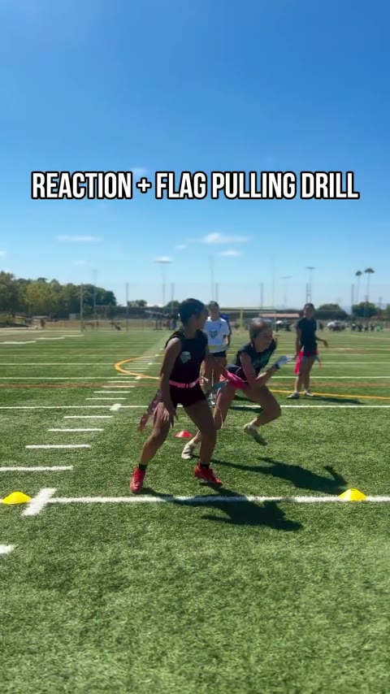
RéactionBase large, hanches basses : on attend le premier pas de l'attaquant.
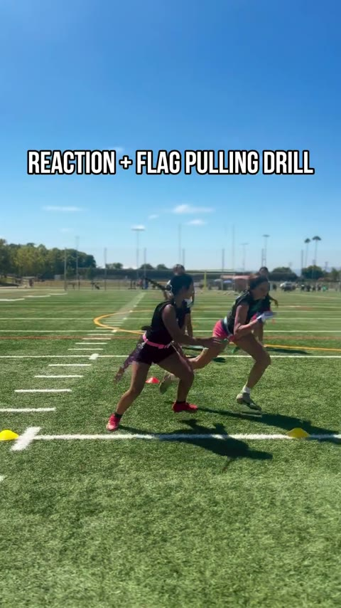
Fermeture de l'angleLe corps se place sur la trajectoire, le bras part vers la hanche.
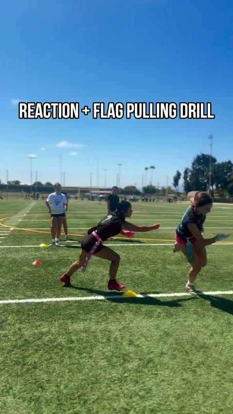
Main vers le flagApproche basse, gant tendu vers le fanion jaune qui pend à la hanche.
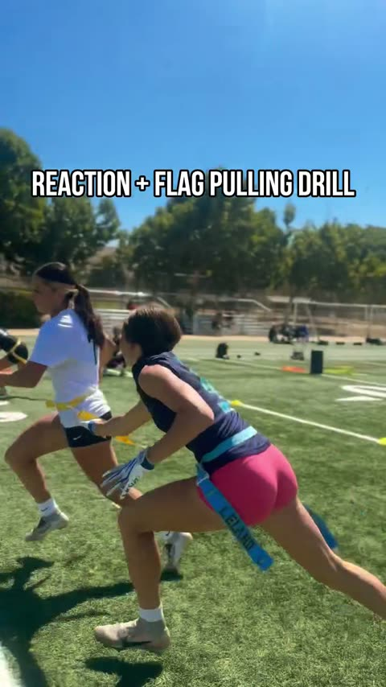
Gant sur le flagLe gant arrive sur le fanion : il est tiré sous tension, on ne s'arrête pas.
L'essentiel
Ne pas partir trop tôt : on réagit, on n'anticipe pas.
Rester bas et fermer l'espace avec les pieds.
La main arrive en dernier, sur le fanion, et on ne s'arrête pas.
Ce que la vidéo montre : le gant qui part vers le fanion, puis le contact — le fanion est tiré sous tension pendant environ 0,7 s. Ce qu'elle ne montre pas : le fanion ne se détache jamais à l'image. La finition du pull est donc à travailler à part.
Objectif : traverser le sas en deux ou trois secondes — entrer en mouvement, descendre, réorienter, ressortir — sans jamais s'arrêter.
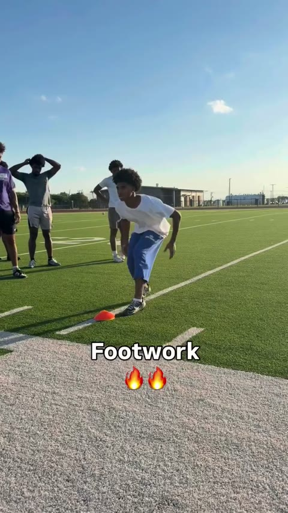
EntréeLe joueur arrive déjà en mouvement, hanches basses.
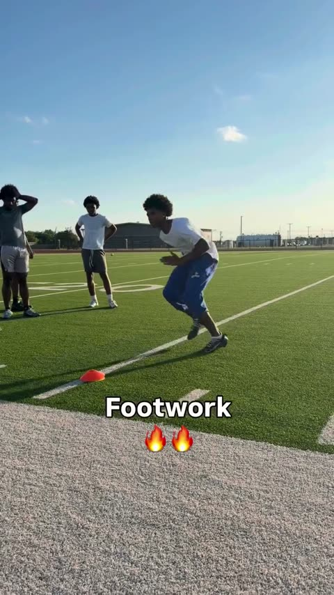
AbaissementLes hanches descendent, le buste se penche, un pied se pose sur la ligne.
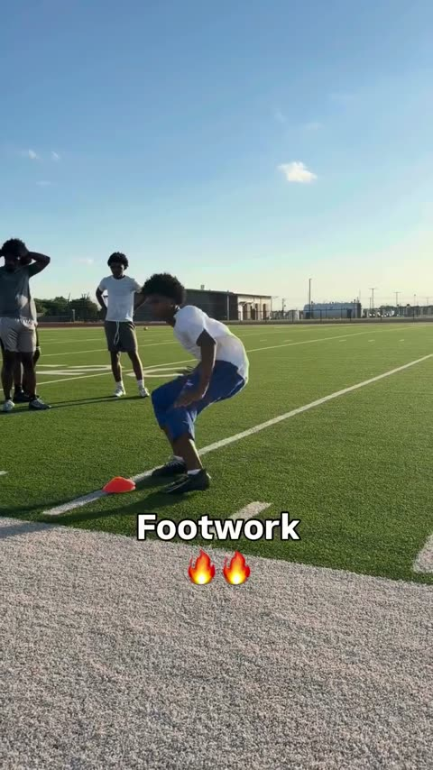
Appuis courtsPosition la plus basse : pieds rapprochés sur la ligne, buste replié.
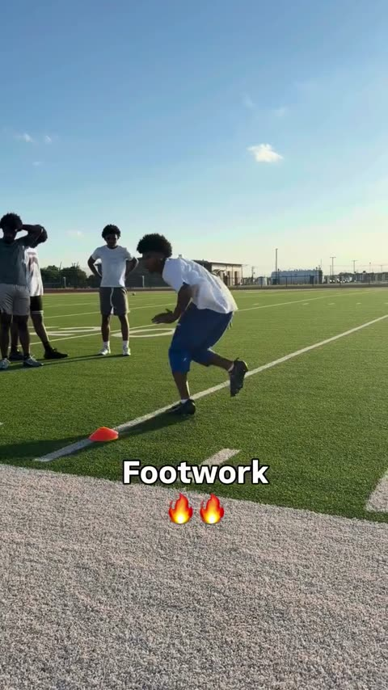
SortiePoussée de la jambe arrière, le buste se redresse : le joueur repart.
L'essentiel
Rester bas : on ne se redresse pas entre les appuis.
Appuis courts et rapides, pas de pieds plats.
On traverse et on repart : pas de file devant le sas.
Atelier sans ballon dans la vidéo. Deux nuances : une prise montre un vrai départ arrêté (joueur immobile, fléchi, presque une seconde avant le premier pas), et le joueur ne change pas de direction — il croise les appuis et tourne le buste sur la ligne. La réorientation et la sortie vers le QB sont notre adaptation.
Détails coaching
Déroulement
Entrer en mouvement : les joueurs arrivent déjà lancés.
Abaisser le centre de gravité au plot.
Appuis courts et rapides pour se réorienter.
Tourner les hanches, pas seulement le buste.
Ressortir en accélération, directement vers le QB.
Points de coaching
Deux ou trois appuis suffisent : c'est un passage.
Le regard reste devant, la tête ne plonge pas.
Les bras accompagnent la rotation.
La sortie se fait vers l'extérieur, jamais dans le trafic.
À éviter
Se redresser entre deux appuis.
Appuis longs, pieds à plat.
Tourner le buste sans les hanches.
S'arrêter en sortie, ou attendre son tour.
1:20
20 min
Match — 2 × 10 min
1re mi-temps
10 minutes
Changement immédiat à la fin.
2e mi-temps
10 minutes
On limite les interruptions au maximum.
Tu ne regardes que trois choses, directement liées aux ateliers :
QB — précision sous rush.
Receveurs — catch + accélération.
Défense — angle + flag pull.
1:40
20 min
Renforcement — finisher collectif
Finisher collectif. Les volumes sont des objectifs totaux à atteindre, pas 100 répétitions d'affilée : après 1 h 40 de séance, on garde la qualité du mouvement.
Objectif total
Squats 100
Pompes 50
Abdos 100
4 tours conseillés
Squats 25
Pompes 12 / 13 / 12 / 13
Abdos 25
Squats : 25 × 4 = 100 · Abdos : 25 × 4 = 100 · Pompes : 12 + 13 + 12 + 13 = 50. On coupe un tour en deux plutôt que de dégrader un mouvement.